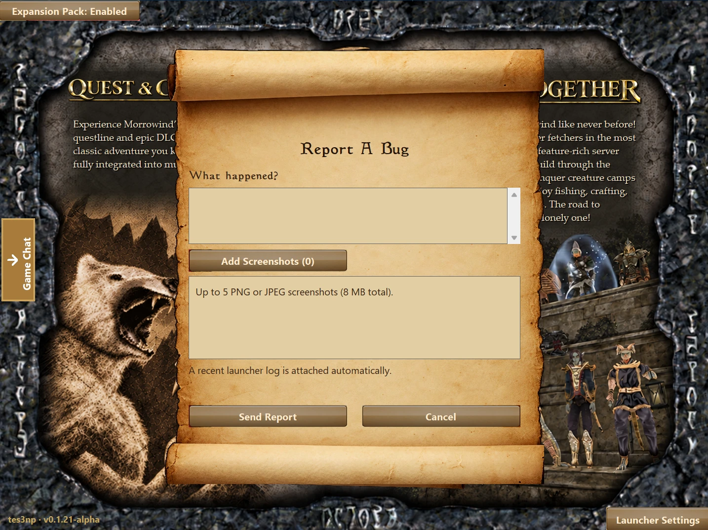

Features
- Character Management and Auto Login — Save up to ten characters, log in up to four at once, and set a favorite for quick login.
- Character Portraits — Use the built-in race icons or add a custom portrait for a character's login screen.
- Data Backups — Export saved character details and login delays to move them to another PC.
- Expansion Pack Support — Install or update the official pack through Discord, or import a ZIP or extracted folder.
- Macro Integration — Run AutoHotkey scripts, ZIP macro packages, or linked Windows apps from Manage Characters.
- Custom Game Clients — Use the included TES3MP client or configure your own executable and dependencies.
- Game Chat and Happy Hour — Read live Discord chat and see active Happy Hour countdowns from new or saved announcements.
Quick Start
Requires Windows 10 or 11 (64-bit) and Morrowind GOTY with Tribunal and Bloodmoon. The ZIP includes TES3MP 0.8.1 and AutoHotkey v2.
- Extract the entire Windows ZIP into its own folder.
- Run
tes3np.exe. If prompted, select your Morrowind GOTY folder. - Open Manage Characters to save a character, or click Start New Adventure to log in manually.
If Game Chat isn’t working, check whether Microsoft WebView2 Runtime is installed. It comes with Windows 11 and is already installed on most Windows 10 PCs.
See player guide for a more in-depth user guide.
Update
Click the version number in the bottom-left corner to review release notes and check for updates. Keep %APPDATA%\tes3np to preserve your characters and preferences.
Bug Reporting


Open Launcher Settings → Launcher Data → Report A Bug to send a description, diagnostic logs, and optional screenshots.
Latest Update
v0.1.21-alpha
Changes since the last public release, v0.1.20-alpha.
New Features
- Game Chat: Read live Nerevarine Prophecies Discord messages alongside the launcher.
- Bug reporting: Send a report from Launcher Data with diagnostic logs and optional screenshots.
- Bundled TES3MP: The Windows ZIP includes the TES3MP 0.8.1 client and its dependencies.
- Happy Hour notifications: See an active Happy Hour and its remaining time on the launcher.
- Plugin mismatch recovery: If your plugins don't match the server's, the launcher helps you download the Expansion Pack and troubleshoot the problem.
- TES3MP Setup: Choose a custom TES3MP executable without replacing the bundled client.
- Login Progress: See your character's login steps in a dedicated progress window.
- Race: Select your character's race in Manage Characters to show its matching icon during login.
- Original Character: Choose Original Character in the Race selector to use a custom portrait.
Improvements
- Expansion Pack updates: TES3NP checks for the official pack before character login or re-enabling an installed pack. The update prompt shows the installed version when it can identify it, shows the available version, and lets you install from Discord or select a local package.
- Expansion Pack toggle: See progress while enabling the pack and a single confirmation when it is enabled or disabled.
- Launcher update channels: Alpha, beta, and live builds check their own feeds and show when a hotfix is available.
- Launcher Interface: Improved window scaling, menu positioning, and dialog appearances for a more consistent experience.
- Upload Expansion: Install the Expansion Pack from a downloaded ZIP file or an extracted folder.
- Diagnostics: Improved diagnostics for mismatches and error handling.
- Favorite character: Your first added character is now automatically selected as your favorite.
Bug Fixes
- Character reconnect — Edit a character to enable automatic reconnect after a crash. Closing the game normally leaves it closed.
- Game Chat — Fixed a blank chat panel after first-time sign-in that could require restarting the launcher. The loading message and scrollbar now appear during the transition into Game Chat.
- Discord sign-in — Expansion Pack checks open the dedicated sign-in window when needed and resume after you sign in. Sign-in requests made while Discord is initializing are also handled.
- Manage Characters — Fixed visible flashing when editing or deleting characters and reduced the delay when closing the page.
- Manage Macros — Fixed a brief redraw glitch when saving a macro name.
- Morrowind setup — Fixed launch attempts that could proceed with missing game files. The launcher now opens the Morrowind folder picker.
- Expansion Pack imports — Fixed imports that could fail when Windows briefly locked a file and removed a size limit that rejected the official Expansion Pack ZIP.
- Character backups — Fixed an import error caused by the launcher trying to update a removed TES3MP executable field while restoring game client settings.
- Desktop shortcut prompt — Fixed cases where the prompt could reappear after a choice had already been saved.
- Launcher updates — Fixed a Windows PowerShell encoding issue that could prevent the updated launcher from confirming startup.
- AppData cleanup — The launcher now clears stale partial downloads, temporary files, and obsolete launcher caches on startup.
- Diagnostic privacy — Removed sensitive details such as local file paths and private URLs from diagnostic logs and copied reports.
Removed Features
- Scheduled Events: I decided to remove Scheduled Events because it doesn't align with my current plans for the launcher. Pieces of this feature will end up in future versions in some capacity.